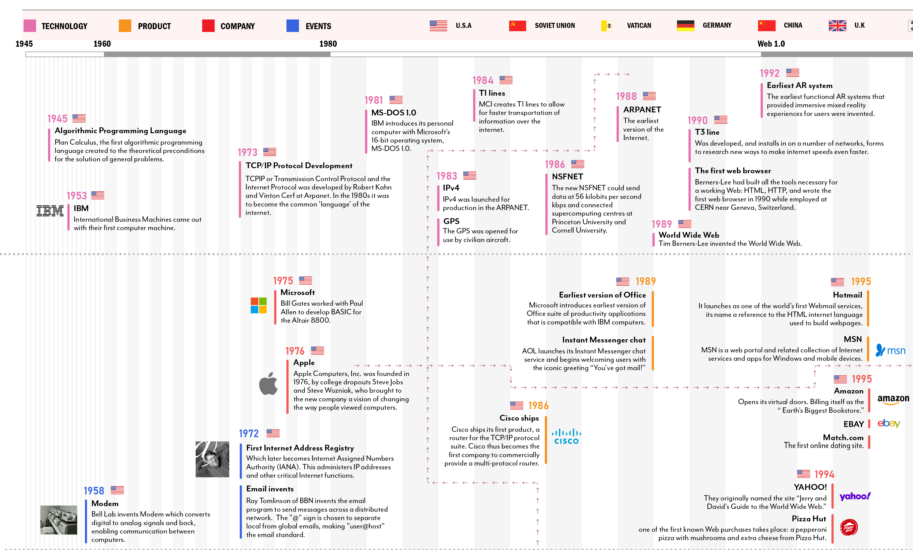
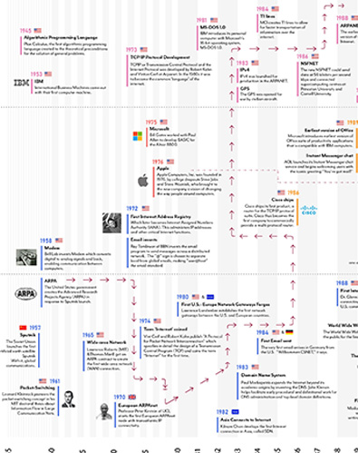
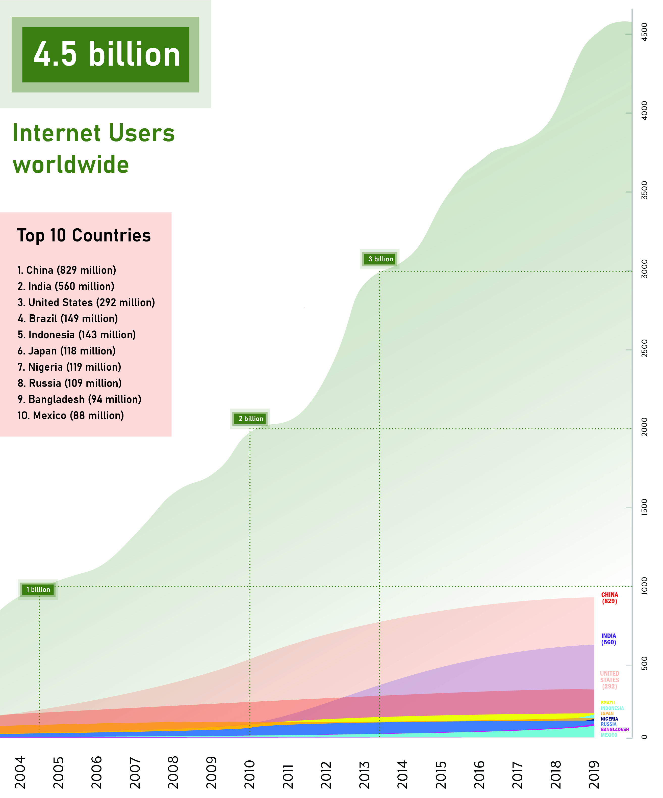

Milestones of Internet
Group 10
Milestones of Internet
Group 10
Zhang Mengying, Zhu Hanyu, Huang Zixun,
Wu Can, Li Xiaoqian,
Mohammad Asjad Maswood

The communication goal is to outline all the important milestones in the history of the Internet since 1945 to the present day.
This data cum information visualization focuses on the milestones that led to the establishment of the Internet as we
know it today, from its inception as an idea in the 1940s until the early 21st Century.
The varied and complex social and technological transformations we witness today have their roots in the
way the Internet has been developed.
Breakdown of the Milestones
The milestones of Internet is classified under 4 different major categories, which are Technology/Product/Company/Events and highlighted by 4 different colors accordingly. These milestones are well connected to their countries/regions of origin.
All of these categories horizontally follow the basic timeline from 1945-2019 and has been simplified, and according to the density of milestones, the timeline has further divided by every single year to widely distribute the important milestones occurred throughout the time. Also, from the web generation perspective, the timeline has been classified as Web 1.0/Web 2.0 and Web 3.0.

Classification of the Milestone into different categories
Connections between different Milestones

Arrow showing the connections between milestones
The red arrow connecting different milestones throughout the timeline is showing how different categories (Technology/Product/Company/Events) have different important events at differnt stages and are well connected to each other depicting the growth of that particular asset maybe in the form of new inventions, launch of innovative products, important events happened or collaboration/acquisition of other brands/assets.
Here, in the picture, the red arrow shows the connections between 3 milestones related to ARPA. How Advanced Projects Research Agency was created in 1958 followed by the setup of European ARPAnet in 1970 which is further connected to the release of the earliest version of the ARPAnet in 1988.
Here, in the picture, the red arrow shows the connections between 3 milestones related to ARPA. How Advanced Projects Research Agency was created in 1958 followed by the setup of European ARPAnet in 1970 which is further connected to the release of the earliest version of the ARPAnet in 1988.
The Internet Big Picture : Internet Users Statistics

Internet users around the globe
According to Internet world stats report, there are 4.53 billion internet users around the world. Considering that the number of humans living on Earth is presently estimated at some 7.7 billion, this means that over 59 percent of the world population is interconnected through the use of internet.
As of 2019, China was ranked first among the countries with the most internet users. China had 829 million internet users, more than double the amount of third-ranked United States with just over 293 million internet users. Overall, all BRIC markets had more than 100 million internet users, accounting for four of the eight countries with more than 100 million internet users.
As of 2019, China was ranked first among the countries with the most internet users. China had 829 million internet users, more than double the amount of third-ranked United States with just over 293 million internet users. Overall, all BRIC markets had more than 100 million internet users, accounting for four of the eight countries with more than 100 million internet users.
References
{kind=link}
{kind=link}
{kind=link}
-
Project by
- Zhang Mengying
- Zhu Hanyu
- Huang Zixun
- Wu Can
- Li Xiaoqian
- Mohammad Asjad Maswood
- Faculty
- Michele Mauri
- Angeles Briones
- Gabriele Colombo
- Simone Vantini
- Salvatore Zingale
- Teaching Assistants
- Andrea Benedetti
- Lea Mara Fabiano
- Alessandra Facchin
- Beatrice Gobbo
- Tommaso Elli
- Jacopo di Lorio
- Anna Riboldi